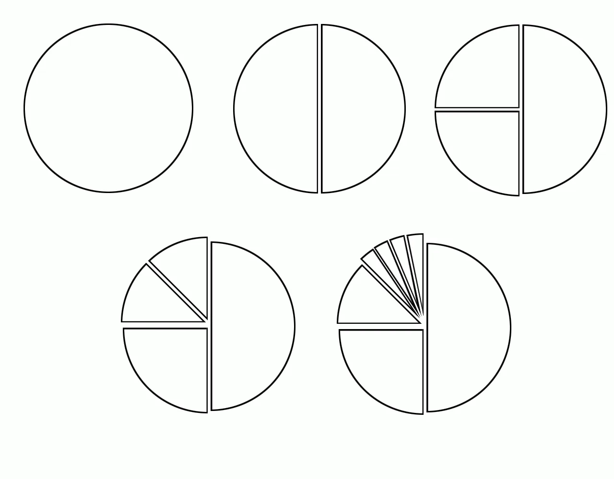

TP du Module 03-04
Pour effectuer ce TP, il faut avoir suivi la partie sur le découpage en sous-réseau du module 3 sur l’adressage IPv4.
Durée estimée : 3 heures
Indiquez si les adresses sont valides pour des hôtes.
Transformez la notation CIDR en notation standard.
| Adresse | Valide | @Réseau / @Diffusion | Standard |
|---|---|---|---|
| 12.1.1.1/8 | OUI | 12.0.0.0 12.255.255.255 | 12.1.1.1 255.0.0.0 |
| 209.207.177.100/30 | NON | 209.207.177.100 (réseau) 209.207.177.103 | 209.207.177.100 255.255.255.252 |
| 192.0.35.12/26 | OUI | 192.0.35.0 192.0.35.63 | 192.0.35.12 255.255.255.192 |
| 120.146.80.1/20 | OUI | 120.146.80.0 120.146.95.255 | 120.146.80.1 255.255.240.0 |
| 120.80.1.0/11 | OUI | 120.64.0.0 120.95.255.255 | 120.80.1.0 255.224.0.0 |
| 211.104.16.17/29 | OUI | 211.104.16.16 211.104.16.23 | 211.104.16.17 255.255.255.248 |
| 172.168.0.1/24 | OUI | 172.168.0.0 172.168.0.255 | 172.168.0.1 255.255.255.0 |
| 109.168.248.32/21 | OUI | 109.168.248.0 109.168.255.255 | 109.168.248.32 255.255.248.0 |
| Adresse | Valide | @Réseau / @Diffusion | Standard |
|---|---|---|---|
| 96.139.84.12/21 | OUI | 96.139.80.0 96.139.87.255 | 96.139.84.12 255.255.248.0 |
| 172.16.32.0/25 | NON | 172.16.32.0 (réseau) 172.16.32.127 | 172.16.32.0 255.255.255.128 |
| 172.16.0.127/25 | NON | 172.16.0.0 172.16.0.127 (broadcast) | 172.16.0.127 255.255.255.128 |
| 192.168.19.87/29 | NON | 192.168.19.80 192.168.19.87 (broadcast) | 192.168.19.87 255.255.255.248 |
| 172.16.32.1/18 | OUI | 172.16.0.0 172.16.63.255 | 172.16.32.1 255.255.192.0 |
| 210.71.10.128/28 | NON | 210.71.10.128 (réseau) 210.71.10.143 | 210.71.10.128 255.255.255.240 |
Calculez le masque approprié et complétez l’adresse en notation CIDR afin d’obtenir la quantité d’hôtes ou de sous-réseaux requis.
Le masque de sous-réseau de départ est le masque par défaut associé à la classe.
| Paramètres requis | Notation CIDR |
|---|---|
| Au moins 120 sous-réseaux | 172.16.0.0/23 |
| 2 adresses par sous-réseau (liaisons pt à pt) | 192.168.1.0/30 |
| Au moins 31 sous-réseaux | 185.221.0.0/21 |
| Au moins 15 sous-réseaux | 131.107.0.0/20 |
| À peu près 500 sous-réseaux | 140.10.0.0/25 |
| Exactement 8 sous-réseaux | 192.168.10.0/27 |
| 10 sous-réseaux d’au moins 17 hôtes | 214.12.33.0/X |
| Environ 2020 sous-réseaux | 10.0.0.0/19 |
| 127 sous-réseaux | 188.23.0.0/23 |
Calculez le masque adapté aux exigences du scénario.
Indiquez le nombre de sous-réseaux créés.
Indiquez le nombre d’hôtes par sous-réseau.
Le réseau de départ comporte toujours un masque de classe A, B ou C standard.
| Rubrique | Valeur |
|---|---|
| Nombre de segments physiques requis | 5 — 3 bits + 1 |
| Nombre maximum d’hôtes par segment | 25 — 5 bits − 1 |
| Adresse de réseau | 192.177.4.0 |
| Masque de sous-réseau proposé | 255.255.255.240 |
| Nombre de sous-réseaux créés | 24 = 16 |
| Nombre maximum d’adresses par segment | 24 − 2 = 14 |
| Rubrique | Valeur |
|---|---|
| Nombre de segments physiques requis | 100 — 7 bits + 1 |
| Nombre maximum d’hôtes par segment | 88.000 — 17 bits − 1 |
| Adresse de réseau | 39.0.0.0 |
| Masque de sous-réseau proposé | 255.255.0.0 |
| Nombre de sous-réseaux créés | 28 = 256 |
| Nombre maximum d’adresses par segment | 216 − 2 = 65534 |
| Rubrique | Valeur |
|---|---|
| Nombre de segments physiques requis | 100 — 7 bits + 1 |
| Nombre maximum d’hôtes par segment | 350 — 9 bits − 1 |
| Adresse de réseau | 171.133.0.0 |
| Masque de sous-réseau proposé | 255.255.255.0 |
| Nombre de sous-réseaux créés | 28 = 256 |
| Nombre maximum d’adresses par segment | 28 − 2 = 254 |
| Rubrique | Valeur |
|---|---|
| Nombre de segments physiques requis | 16 — 4 bits + 1 + 1 |
| Nombre maximum d’hôtes par segment | 1 500 — 11 bits − 1 |
| Adresse de réseau | 128.199.0.0 |
| Masque de sous-réseau proposé | 255.255.252.0 |
| Nombre de sous-réseaux créés | 26 = 64 |
| Nombre maximum d’adresses par segment | 210 − 2 = 1022 |
| Rubrique | Valeur |
|---|---|
| Nombre de segments physiques requis | 250 — 8 bits + 1 + 1 |
| Nombre maximum d’hôtes par segment | 100 — 7 bits − 1 |
| Adresse de réseau | 191.254.0.0 |
| Masque de sous-réseau proposé | 255.255.255.192 |
| Nombre de sous-réseaux créés | 210 = 1024 |
| Nombre maximum d’adresses par segment | 26 − 2 = 62 |
| Rubrique | Valeur |
|---|---|
| Nombre de segments physiques requis | 12 — 4 bits + 1 |
| Nombre maximum d’hôtes par segment | 12 — 4 bits − 1 |
| Adresse de réseau | 216.121.44.0 |
| Masque de sous-réseau proposé | 255.255.255.248 |
| Nombre de sous-réseaux créés | 25 = 32 |
| Nombre maximum d’adresses par segment | 23 − 2 = 6 |
| Rubrique | Valeur |
|---|---|
| Nombre de segments physiques requis | 50 — 6 bits + 1 |
| Nombre maximum d’hôtes par segment | 600 — 10 bits − 1 |
| Adresse de réseau | 134.119.0.0 |
| Masque de sous-réseau proposé | 255.255.254.0 |
| Nombre de sous-réseaux créés | 27 = 128 |
| Nombre maximum d’adresses par segment | 29 − 2 = 510 |
On découpe le bloc 199.210.15.0/24 selon le schéma suivant.

Donnez les adresses des 7 segments définis (par ordre croissant).
| Segment | Adresse |
|---|---|
| Segment 1 | 199.210.15.0/25 |
| Segment 2 | 199.210.15.128/26 |
| Segment 3 | 199.210.15.192/27 |
| Segment 4 | 199.210.15.224/29 |
| Segment 5 | 199.210.15.232/29 |
| Segment 6 | 199.210.15.240/29 |
| Segment 7 | 199.210.15.248/29 |
Segments imprimés en rouge dans la correction, avec le nombre d’adresses de la ligne du tableau.
| Préfixe | Réseau retenu | Adresses du préfixe |
|---|---|---|
| /25 | 195.220.12.0 | 126 |
| /26 | 195.220.12.128 | 62 |
| /27 | 195.220.12.192 | 30 |
| /28 | 195.220.12.224 | 14 |
| /29 | 195.220.12.240 | 6 |
| /29 | 195.220.12.248 | 6 |
La grille imprimée contient aussi, hors des blocs retenus, les cases 195.22.12.144 et 195.22.12.152.
Segments imprimés en rouge dans la correction, avec le nombre d’adresses de la ligne du tableau.
| Préfixe | Réseau retenu | Adresses du préfixe |
|---|---|---|
| /26 | 192.168.10.0 | 62 |
| /26 | 192.168.10.64 | 62 |
| /26 | 192.168.10.128 | 62 |
| /27 | 192.168.10.192 | 30 |
| /28 | 192.168.10.224 | 14 |
| /28 | 192.168.10.240 | 14 |
Segments imprimés en rouge dans la correction, avec le nombre d’adresses de la ligne du tableau.
| Préfixe | Réseau retenu | Adresses du préfixe |
|---|---|---|
| /25 | 222.8.15.0 | 126 |
| /27 | 222.8.15.128 | 30 |
| /27 | 222.8.15.160 | 30 |
| /27 | 222.8.15.192 | 30 |
| /27 | 222.8.15.224 | 30 |
Réseaux actuellement utilisés :
La correction marque en rouge les réseaux utilisés et en vert les réseaux disponibles.
Segments disponibles imprimés en vert :
Réseaux actuellement utilisés :
La correction marque en rouge les réseaux utilisés et en vert les réseaux disponibles.
Segments disponibles imprimés en vert :
Réseaux actuellement utilisés :
La correction marque en rouge les réseaux utilisés et en vert les réseaux disponibles.
Segments disponibles imprimés en vert :
Réseaux actuellement utilisés :
La correction marque en rouge les réseaux utilisés et en vert les réseaux disponibles.
Segments disponibles imprimés en vert :
Blocs retenus imprimés en rouge : un /26, trois /27 et quatre /28. La ligne du tableau indique 62, 30 et 14 adresses.
Réseaux actuellement utilisés :
La correction marque en rouge les réseaux utilisés et en vert les réseaux disponibles.
Segments disponibles imprimés en vert :
Blocs retenus imprimés en rouge : trois /27 et trois /28.
Réseaux actuellement utilisés :
La correction marque en rouge les réseaux utilisés et en vert les réseaux disponibles.
Segments disponibles imprimés en vert :
Blocs retenus imprimés en rouge : un /26 et un /28.